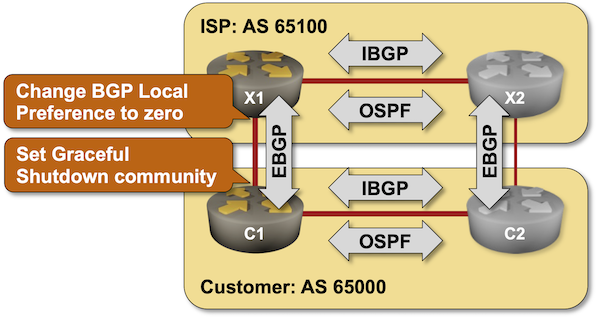

BGP Graceful Shutdown
Imagine you have to perform maintenance of the primary uplink of your mission-critical site. You could shut down the link (or power off the router) and wait for a few minutes for the global Internet to adapt to the change1, or you could do the right thing and try to shift the traffic to the backup link before shutting down the primary one.
Shifting the traffic away from a link scheduled for maintenance has two components:
- Telling everyone in your autonomous system not to use the affected link, usually by setting the BGP local preference of all prefixes received over that link to zero.
- Telling the upstream provider not to use the link. RFC 8326 defines the recommended tool for the job: the GRACEFUL_SHUTDOWN community.
In this lab exercise, you’ll implement the configuration changes needed to support the BGP Graceful Shutdown functionality on a customer and a provider router and test the graceful shutdown procedure.

Expert
We expect you to have completed most of the foundational labs and know what you’re doing. The lab instructions contain only high-level guidelines.
Existing Router Configurations
The routers in your lab use the following BGP AS numbers and advertise one prefix per autonomous system.
| Node/ASN | Router ID | Advertised prefixes |
|---|---|---|
| AS65000 | ||
| c1 | 10.0.0.1 | 192.168.42.0/24 |
| c2 | 10.0.0.2 | 192.168.42.0/24 |
| AS65100 | ||
| x1 | 10.0.0.10 | 172.18.12.0/24 |
| x2 | 10.0.0.11 | 172.18.12.0/24 |
The routers you’re configuring have these BGP neighbors:
| Node | Router ID/ Neighbor |
Router AS/ Neighbor AS |
Neighbor IPv4 |
|---|---|---|---|
| c1 | 10.0.0.1 | 65000 | |
| c2 | 65000 | 10.0.0.2 | |
| x1 | 65100 | 10.1.0.6 | |
| x1 | 10.0.0.10 | 65100 | |
| x2 | 65100 | 10.0.0.11 | |
| c1 | 65000 | 10.1.0.5 |
The routers you’re configuring run OSPF in the backbone area with the other routers in the same autonomous system:
| Router | Interface | IPv4 Address | Neighbor(s) |
|---|---|---|---|
| c1 | Loopback | 10.0.0.1/32 | |
| eth1 | 192.168.42.1/24 | c2 | |
| c2 | Loopback | 10.0.0.2/32 | |
| eth1 | 192.168.42.2/24 | c1 | |
| x1 | Loopback | 10.0.0.10/32 | |
| eth2 | 172.18.12.1/24 | x2 | |
| x2 | Loopback | 10.0.0.11/32 | |
| eth3 | 172.18.12.2/24 | x1 |
netlab automatically configures all lab devices; if you’re using another lab infrastructure, you’ll have to manually configure C1 and X1.
Start the Lab
Assuming you already set up your lab infrastructure:
- Change directory to
challenge/03-graceful-shutdown - Execute netlab up (device requirements, other options)
- Log into your routers with netlab connect and verify that their IP addresses and routing protocols are properly configured.
The Problem
Log into C1 and X1 and check their BGP tables. Assuming your devices use the default local preference value of 100, they should not use any inter-AS routes propagated by C2 or X2. This is the printout you would get on C1 running FRRouting:
$ netlab connect -q c1 --show ip bgp
BGP table version is 2, local router ID is 10.0.0.1, vrf id 0
Default local pref 100, local AS 65000
Status codes: s suppressed, d damped, h history, * valid, > best, = multipath,
i internal, r RIB-failure, S Stale, R Removed
Nexthop codes: @NNN nexthop's vrf id, < announce-nh-self
Origin codes: i - IGP, e - EGP, ? - incomplete
RPKI validation codes: V valid, I invalid, N Not found
Network Next Hop Metric LocPrf Weight Path
*> 172.18.12.0/24 10.1.0.6(x1) 0 0 65100 i
* i192.168.42.0/24 10.0.0.2(c2) 0 100 0 i
*> 0.0.0.0(c1) 0 32768 i
Displayed 2 routes and 3 total paths
On the other hand, C2 and X2 prefer IBGP routes advertised by C1 and X1. This is the printout you would get on C2 running FRRouting:
$ netlab connect -q c2 --show ip bgp
BGP table version is 4, local router ID is 10.0.0.2, vrf id 0
Default local pref 100, local AS 65000
Status codes: s suppressed, d damped, h history, * valid, > best, = multipath,
i internal, r RIB-failure, S Stale, R Removed
Nexthop codes: @NNN nexthop's vrf id, < announce-nh-self
Origin codes: i - IGP, e - EGP, ? - incomplete
RPKI validation codes: V valid, I invalid, N Not found
Network Next Hop Metric LocPrf Weight Path
*>i172.18.12.0/24 10.0.0.1(c1) 0 100 0 65100 i
* 10.1.0.2(x2) 0 50 0 65100 i
* i192.168.42.0/24 10.0.0.1(c1) 0 100 0 i
*> 0.0.0.0(c2) 0 32768 i
Displayed 2 routes and 4 total paths
Shutting down the C1-X1 link would cause a lab-wide outage until the BGP session between C1 and X1 is brought down and the routers update their BGP tables. As you’re not using BFD or reduced BGP timers, it could take up to three minutes for the network to converge.
Configuration Tasks
RFC 8326 defines the Graceful Shutdown BGP community that you can use to drain traffic from a link before it’s brought down for maintenance. The routers using the procedures from that RFC should set BGP Local Preference of prefixes carrying the GRACEFUL_SHUTDOWN community to a low value
Some vendors (for example, Arista) recognize the GRACEFUL_SHUTDOWN community without extra configuration and set BGP Local Preference to zero. On other devices, you have to create:
- Configure a route map on X1 that matches the GRACEFUL_SHUTDOWN community and sets BGP Local Preference as low as possible.
- Apply the route map to all EBGP sessions.
Before starting the maintenance process, the customer router (C1) has to:
- Set the GRACEFUL_SHUTDOWN community on all EBGP updates
- Set the local preference on all incoming EBGP updates to as low as possible.
Some vendors (for example, Arista) implemented BGP maintenance mode that performs those tasks automatically. On other devices, you have to modify the C1 configuration:
- Configure an outbound route map that sets the GRACEFUL_SHUTDOWN community
- Configure an inbound route map that sets the BGP local preference to zero
- Before shutting down the C1-X1 link, apply both route maps to the EBGP session with X1.
Newer BGP implementations automatically lower BGP local preference on routes with the GRACEFUL_SHUTDOWN community. On older implementations, you have to modify the X1 configuration:
- Configure an inbound route map that matches the GRACEFUL_SHUTDOWN community and sets the BGP local preference to zero. It should permit all other routes.
- Apply the route map as an inbound route map to the EBGP session with C1.
Tip
You’ll find more details in these lab exercises:
Verification
After configuring and applying route maps on C1 and X1, the BGP table on C1 should contain routes advertised by X1 (with local preference set to a very low value) and those advertised by C2 (with higher local preference). C1 should prefer the routes to AS 65100 advertised by C2:
$ netlab connect -q c1 --show ip bgp 172.18.12.0/24
BGP routing table entry for 172.18.12.0/24, version 4
Paths: (2 available, best #1, table default)
Advertised to non peer-group peers:
x1(10.1.0.6)
65100
10.0.0.2(c2) (metric 10) from c2(10.0.0.2) (10.0.0.2)
Origin IGP, metric 0, localpref 50, valid, internal, bestpath-from-AS 65100, best (Local Pref)
Last update: Tue Oct 1 06:47:04 2024
65100
10.1.0.6(x1) from x1(10.1.0.6) (10.0.0.10)
Origin IGP, metric 0, localpref 0, valid, external
Last update: Tue Oct 1 06:47:04 2024
Similarly, X1 should prefer routes to AS 65000 advertised by X2:
$ netlab connect -q x1 --show ip bgp 192.168.42.0/24
BGP routing table entry for 192.168.42.0/24, version 4
Paths: (2 available, best #1, table default)
Advertised to non peer-group peers:
c1(10.1.0.5)
65000
10.0.0.11(x2) (metric 10) from x2(10.0.0.11) (10.0.0.11)
Origin IGP, metric 0, localpref 50, valid, internal, bestpath-from-AS 65000, best (Local Pref)
Last update: Tue Oct 1 06:47:07 2024
65000
10.1.0.5(c1) from c1(10.1.0.5) (10.0.0.1)
Origin IGP, metric 0, localpref 0, valid, external
Community: graceful-shutdown
Last update: Tue Oct 1 06:47:07 2024
Reference Information
This lab uses a subset of the 4-router lab topology. The following information might help you if you plan to build custom lab infrastructure:
Device Requirements
- Use any device supported by the netlab BGP and OSPF configuration module for the C1 and X1.
- Use devices supported by the netlab bgp.policy plugin for C2 and X2.
- Git repository contains external router initial device configurations for Cumulus Linux.
Lab Wiring
| Link Name | Origin Device | Origin Port | Destination Device | Destination Port |
|---|---|---|---|---|
| Intra-customer link | c1 | eth1 | c2 | eth1 |
| Unused link | c1 | eth2 | x2 | eth1 |
| C2 uplink | c2 | eth2 | x2 | eth2 |
| Unused link | x1 | eth1 | c2 | eth3 |
| Intra-ISP link | x1 | eth2 | x2 | eth3 |
| C1 uplink | c1 | eth3 | x1 | eth3 |
Lab Addressing
| Node/Interface | IPv4 Address | IPv6 Address | Description |
|---|---|---|---|
| c1 | 10.0.0.1/32 | Loopback | |
| eth1 | 192.168.42.1/24 | Intra-customer link | |
| eth2 | Unused link | ||
| eth3 | 10.1.0.5/30 | C1 uplink | |
| c2 | 10.0.0.2/32 | Loopback | |
| eth1 | 192.168.42.2/24 | Intra-customer link | |
| eth2 | 10.1.0.1/30 | C2 uplink | |
| eth3 | Unused link | ||
| x1 | 10.0.0.10/32 | Loopback | |
| eth1 | Unused link | ||
| eth2 | 172.18.12.1/24 | Intra-ISP link | |
| eth3 | 10.1.0.6/30 | C1 uplink | |
| x2 | 10.0.0.11/32 | Loopback | |
| eth1 | Unused link | ||
| eth2 | 10.1.0.2/30 | C2 uplink | |
| eth3 | 172.18.12.2/24 | Intra-ISP link |
-
While enjoying listening to the sounds of a million alerts and the screaming VP of Marketing. ↩